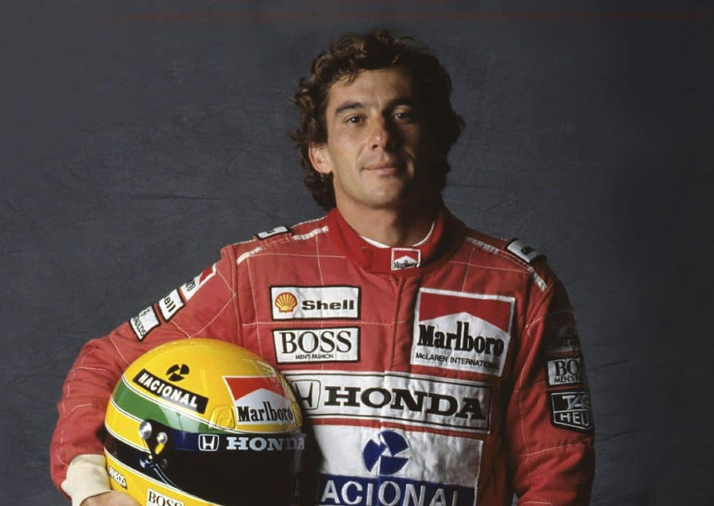

Foto — De internet
Streaming
Série sobre Ayrton Senna tem mais um personagem confirmado
Em produção pela Netflix, a vida do corredor mais famoso do brasil será transcrita no formato seriado, e diversas personalidades aparecerão na trama. Gabriel Le…